| Section | Figures & charts |
|---|---|
| Part I — Orientation | |
| 1. How to read this document · executive summary | KPI strip |
| 2. The big picture — three operating regimes | Figure 1 (master pipeline) |
| 3. The strategy in one page — the skew-consensus fade | — |
| 3b. Design philosophy & the anti-overfitting doctrine | — |
| Part II — The agent system | |
| 4. The agent roster | — |
| 5. Artifact data-flow & the audit trail | Figure 2 |
| 6. Mode A vs Mode B | Figure 3 |
| 7. Orchestration: eleven steps, checkpoints, overrides | — |
| Part III — Agent deep dives | |
| 8. Agent 1 — Hypothesis-Refiner | — |
| 9. Agent 2 — Pre-Critic (four market templates) | — |
| 10. Agent 3 — Coder & the execution sandbox | — |
| 11. The signal it builds — M1 ∧ M2 ∧ M3 | Figure 4 |
| 12. Agent 4 — Backtest (fires → verdict) | Figure 5 |
| 13. The vs-random verdict engine | Figure 6 · Chart 4 |
| 14. Agent 5 — Statistics & the Deflated Sharpe | — |
| 15. Agent 6 — Vs-Random gate | — |
| 16. Agent 7 — Validator (nine criteria) | — |
| 17. Agent 8 — Gatekeeper (statistical gate stack) | Figure 7 |
| 18. Agent 9 — Risk & the sizing engine | Figure 8 |
| 19. Agent 10 — Memory & Reporter | — |
| Part IV — The optimisation layer | |
| 20. Agent 11 — Mutation (constrained optimiser) | Figure 9 · Charts 6–7 |
| 21. Agent 12 — Exit (technical-analysis exits) | Charts 8 |
| Part V — Backtest fidelity | |
| 22. The path-dependent engine | — |
| 23. Parity discipline | Figure 10 |
| 23b. The backtest-realism ladder | — |
| Part VI — From idea to live | |
| 24. The data layer | — |
| 25. Paper-trading execution | Figure 11 |
| 26. End-to-end walkthrough — a worked lifecycle | Figure 12 |
| Part VII — Results & appendices | |
| 27. Results gallery & the honest read | Charts 1–3, 5, 9 |
| 27b. Limitations, failure modes & roadmap | — |
| 27c. Incubating your own thesis — a practical guide | — |
| 28. Glossary · 29. Constants quick-reference · 30. Audit-trail map | — |
This is the engineering companion to the one-page Project Record. Where the Record states what the system achieved, this document explains how — agent by agent, condition by condition — and every numeric threshold, rule, and handoff below is taken directly from the code (file names are cited; code itself is not reproduced).
The system answers three questions in sequence, each handled by a distinct group of agents:
| 21d increment | 21d gross | z-score | Sharpe (sized) | Max drawdown | Deploy size |
|---|---|---|---|---|---|
| +18.15 bps | +106.96 bps | 8.87 | 1.12 | −9.86% | 0.5× |
| vs random pool | per 21d trade | p < 0.0005 | CAGR +5.82% | every year + | Risk Agent 4/10 |
The system is one linear pipeline wrapped by two loops. The linear pipeline (stages 1→10) is the validator. The optimisation loop (agents 11–12) wraps it at design time: a promoted variant re-enters at stage 3→4 and clears the whole gate stack again. The paper loop (Phase 4) runs forward daily on a live feed once a strategy is validated and sized.
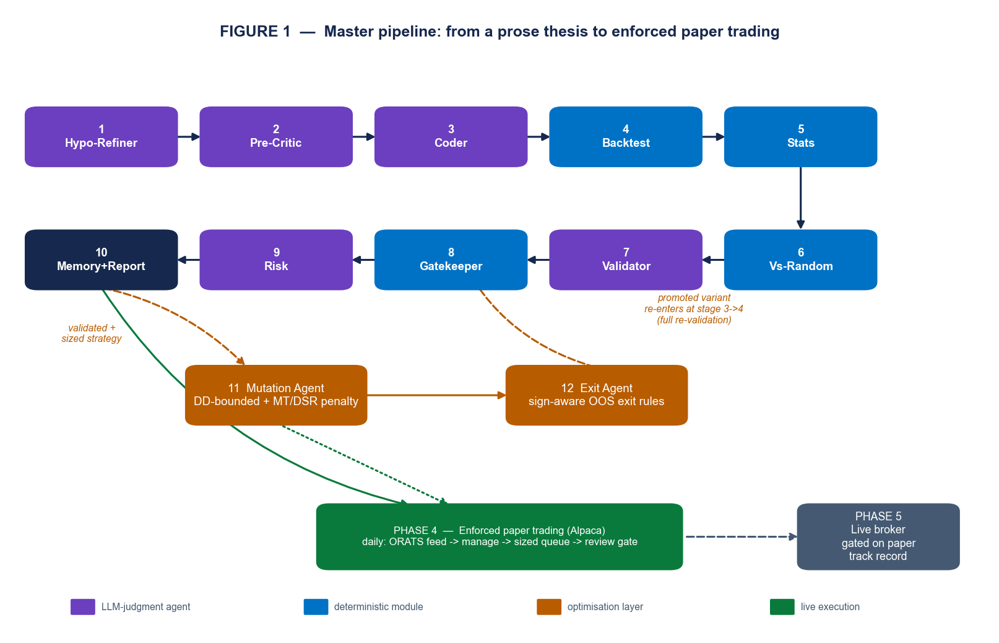
Deterministic maths, LLM judgment. The division of labour is deliberate: anything that must be reproducible and defensible (the signal, the backtest, the statistics, the gates, the sizing) is deterministic Python; anything requiring judgment under ambiguity (formalising a thesis, killing a bad idea, qualitative review, risk sign-off) is an LLM agent with a tightly-scoped rubric. Twelve agents in total: six LLM agents, the deterministic backtest/stats/gates modules, and the two optimisation agents.
The strategy reads the ORATS options surface to detect crowded extremes and fades them, trading the underlying equity (options inform direction only, so the traded instrument is equities). It fires when three independent readings of the surface agree:
putP≤25 & callP≥75) signals euphoria → short; the mirror signals capitulation → long.ivP≥75) and the risk-reversal percentile is at an extreme.A BULL reading carries signal_sign = −1 — it profits if price falls (the fade). A BEAR reading carries +1. The position is held 21 trading days unless an exit rule fires earlier. Filters: an earnings blackout and a short-trend filter are kept (tail control); a VIX filter was removed (it destroyed alpha).
| Property | Value (code-backed) |
|---|---|
| Signal inputs | putP, callP, ivP, rrP, sigma, skewDelta (0–100 percentiles + two raw series) |
| Combination | M1 ∧ M2 ∧ M3, freshness-3, thresholds hi/lo = 75/25, sigma_threshold = 1.0 |
| Direction | BULL → −1 (short fade); BEAR → +1 (long fade) |
| Hold / exit | 21 trading days, with OOS-validated early exits (hard_stop 8% + Bollinger reversion band) |
| Universe | Survivorship-free US equities (active + delisted); ~8,519 tickers in the clean panel |
| Validation edge (21d) | +18.15 bps selection increment, +106.96 bps gross, z 8.87, p < 0.0005, beat-rate 51.6% |
| Sized book | Sharpe 1.12, CAGR +5.82%, max drawdown −9.86%, worst month 2020-02 −7.20% |
| Known weakness | A sharp V-shaped recovery runs over the fade (e.g. the 2020 rebound) |
The single hardest problem in systematic research is not finding a backtest that looks good — it is not being fooled by one. Every design choice in this system serves that goal. Two principles organise everything:
The seven defenses, each mapped to the trap it closes and the code that enforces it:
| Overfitting / self-deception trap | Defense | Enforced in |
|---|---|---|
| “My code silently differs from the idea I validated.” | Fire-parity gate — stored side must equal the reference recompute, tol 0, or scoring is refused. | parity_gate.py + backtest.run |
| “The market just drifted; my ‘edge’ is beta.” | Date- & direction-matched random pool — the null is a random name on the same day, same direction. | signal_vs_random.run_test |
| “I tried 100 variants and kept the best-looking number.” | Deflated Sharpe with an honest, cumulative trial count from the memory store. | stats.deflated_sharpe + memory.n_trials |
| “It only works on the data I tuned it on.” | Walk-forward folds + a held-out test; the optimiser never sees the holdout during search. | exit_agent.select_rules, mutation_agent._wf_score |
| “A penny-stock fluke (+49900%) carries the result.” | Eligibility screen: $1 price floor, |forward return| ≤ 5.0, applied exactly once. | run_test screen |
| “It’s a closet duplicate of a strategy I already run.” | Correlation gate vs accepted survivors (< 0.60) + PCA concentration (< 0.50). | gates.py |
| “A single bad month wipes the book.” | Drawdown kill-switch (−15% → ×0.3) + fractional-Kelly caps + a hard maximum-drawdown bound on every mutation. | sizing.py, mutation_agent.optimise |
Twelve agents, classified by whether they exercise judgment (LLM) or compute a deterministic result. The six LLM agents are defined in .claude/agents/*.md (name, role, allowed tools); the deterministic stages are Python modules under quant_validator/.
| # | Agent / stage | Type | Reads | Writes | Role in one line |
|---|---|---|---|---|---|
| 1 | Hypothesis-Refiner | LLM | thesis.md | refined.json | Prose → JSON spec; stress-test; never invents |
| 2 | Pre-Critic | LLM | refined.json | critique_pre.json | Adversarial kill gate, per-market templates |
| 3 | Coder | LLM | refined.json | code/signal.py | Spec → one runnable strategy() |
| 4 | Backtest | det. | signal.py, panel | vs_random.json + 3 csv | Fires-frame → verdict via random-pool test |
| 5 | Statistics | det. | returns.csv | metrics, dsr, walk_forward | Sharpe, DSR, walk-forward, regime, tail |
| 6 | Vs-Random | det. | annotated panel | vs_random.json | Tier-A permutation floor + Tier-B search |
| 7 | Validator | LLM | all results/* | critique_post.json | Nine-criteria qualitative review |
| 8 | Gatekeeper | det. | dsr/positions/corr | gates_outcome.json | DSR / correlation / PCA / vs-random gates |
| 9 | Risk | LLM | positions/returns/greeks | risk.json | Risk score 0–10 + size recommendation |
| 10 | Memory & Reporter | LLM+det. | decision.json | memory.db + report.html | Logs every trial; renders the living report |
| 11 | Mutation | det. | validated strategy | mutation_agent.json | DD-bounded, MT-disciplined optimiser |
| 12 | Exit | det. | fires + OHLC | exit_selection.json | Sign-aware exit-rule finder + ranker |
All six LLM-agent definitions carry only name, description and an allowed-tools list (Read/Write/Bash/Grep as appropriate); none pins a specific model. The “Reporter” is implemented as a Skill (report-rendering), invoked at stage 10, not as a separate agent file.
Every stage reads named artifacts and writes named artifacts under theses/<id>/. Nothing is implicit: the full chain is on disk and append-only.
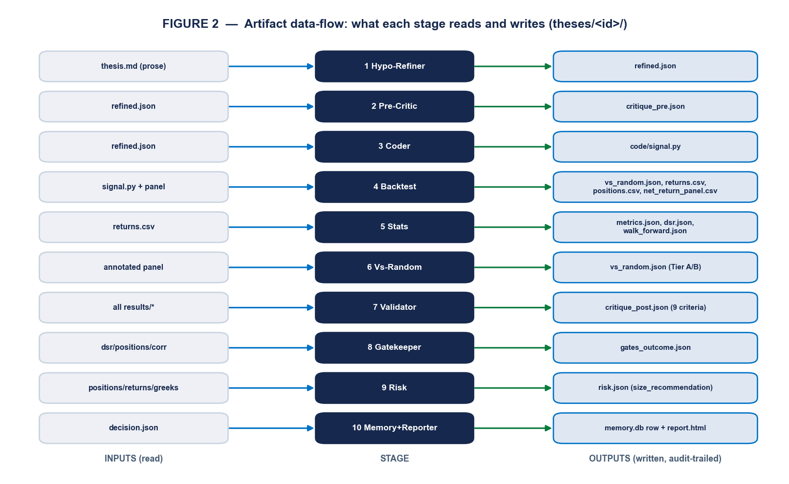
audit_log.jsonl and a human-readable step_summaries/NN_*.md.The per-thesis file set: thesis.md, refined.json, critique_pre.json, code/signal.py, results/{vs_random,metrics,walk_forward,dsr}.json + returns/positions/equity_curve.csv, critique_post.json, gates_outcome.json, risk.json, decision.json, audit_log.jsonl, user_interactions.jsonl, and step_summaries/01–11*.md. Every user decision (a pause answer, an override) is logged to user_interactions.jsonl.
The orchestrator auto-detects the entry mode at Step 0: if results/positions.csv already exists, the thesis arrives with results (Mode B, validate existing numbers); otherwise it is built from prose (Mode A, generate code + backtest). The skew strategy is the Mode-A regression case.
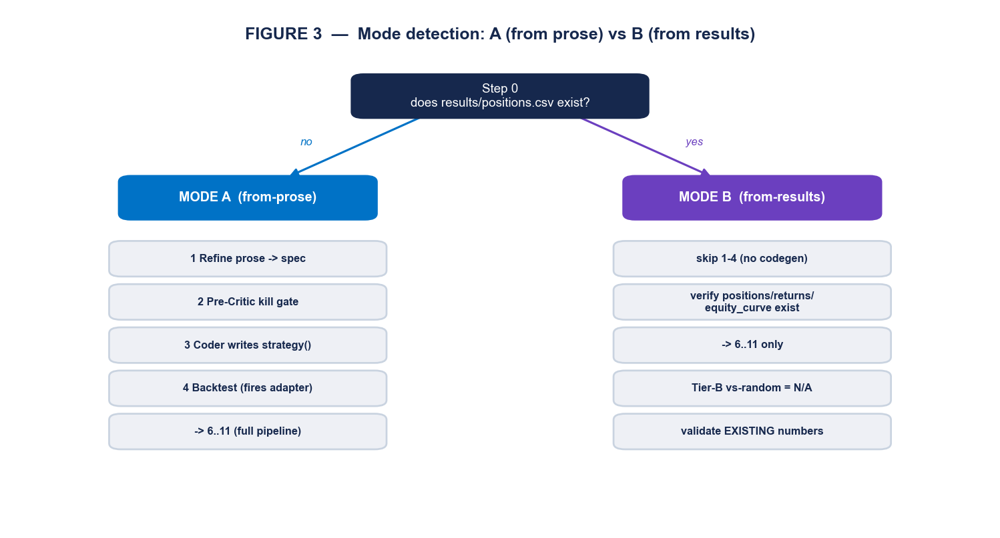
| Dimension | Mode A (from prose) | Mode B (from results) |
|---|---|---|
| Trigger | no positions.csv | positions.csv present |
| Stages 1–2 | refine + pre-critic | refine + pre-critic |
| Stage 3–4 | Coder writes strategy(), Backtest runs it | skipped; supplied results verified to exist |
| Tier-B vs-random | constraint-matched rule search runs | recorded "not_available" |
| Stages 6–11 | full | full (on supplied numbers) |
The /validate-thesis command drives the pipeline. After every step it prints a structured summary and appends JSON to audit_log.jsonl. Soft rejections halt but can be overridden with a logged justification; hard errors (sandbox/missing-data) cannot.
| Step | What runs | Checkpoint / default on --no-pause |
|---|---|---|
| 0 | Locate/create thesis dir; detect Mode A/B | — |
| 1 | Hypothesis-Refiner | if mode==ASK_USER, ask single vs cross-sectional |
| 2 | Pre-Critic | on kill → override (critic_pre) or stop |
| 3 | Data fetch (Mode A) | NotSubscribed adapter → ask skip/abort; default abort |
| 4 | Coder | fire-parity fail → retry/manual/abort; default abort |
| 5 | Backtest (A) / verify files (B) | missing results → abort naming the file |
| 6 | Statistics (DSR with memory’s n_trials) | — |
| 6.5 | Vs-Random gate | fail → override (vs_random) or stop |
| 7 | Validator (9 criteria) | any_fatal → override (critic_validator) or stop |
| 8 | Statistical gates | any fail → override (gates:<name>) or stop |
| 9 | Risk | risk_score==7 → ask user; ≥8 → override (risk) or stop |
| 10 | Memory record | default deployment_status="archived" (no auto-promote) |
| 11 | Final report → decision.json | top line ✓ / ✗ / 🔶 with-override |
The override mechanism (/override-reject). A soft rejection can be overridden only with a justification of ≥ 20 characters (blocks “yolo”), which is appended forever to decision.json.override_log and the memory DB, then the pipeline resumes at failed-step + 1.
| Overridable (soft) | Not overridable (hard) |
|---|---|
critic_pre, vs_random, critic_validator, gates:deflated_sharpe, gates:correlation, gates:pca, risk | sandbox_error, backtest_error, missing_data, missing_results_file |
If three or more overrides have already been applied to a thesis, the override command prints a standing warning before resuming — visible discipline against override-creep.
Each section states the agent’s role, the artifacts it reads and writes, and the exact conditions it applies — every threshold, template, and rubric is taken from the agent definition or the module it drives.
Tools: Read, Write, Grep, WebSearch. Reads theses/<id>/thesis.md; writes refined.json + step_summaries/01_refiner.md. It formalises a user’s prose into a machine-checkable spec and stress-tests it — it never invents a hypothesis.
Specific rules it enforces (code-backed):
single (signal per ticker independently), cross_sectional (ranks tickers each bar), or ASK_USER when genuinely unclear.equities, not options. Allowed: options | equities | indexes_and_index_etfs | crypto. (This is exactly why the skew strategy is classified equities.)works_in_regime and breaks_in_regime are mandatory — the single most valuable disciplinary check.max(252, 2 × lookback) bars; expected_sharpe_range defaults to [0.3, 0.8] when the literature is unclear.user_thesis_verbatim.Emitted JSON keys: hypothesis_id, title, user_thesis_verbatim, rationale, spec{signal, direction, holding_period_bars, rebalance_bars, position_bounds}, mode, market_type, expected_sharpe_range, works_in_regime, breaks_in_regime, stress_test_concerns, data_plan{adapters, universe_source, date_range, warm_up_buffer_bars}, variations.
Tools: Read, Write. Reads refined.json; writes critique_pre.json. Its mandate is blunt: “KILL bad ideas before they waste compute — when in doubt, KILL.” It routes to one of four templates by universe/signal, then applies that template’s checklist. A check tagged [WARNING, NOT KILL] moves the idea forward with a flag; anything else is a kill_reason.
| Template (routing) | Checks it runs (exact) |
|---|---|
| OPTIONS (default; any IV/skew/options feature or holding options) | (1) implicit IV-surface look-ahead (ORATS EOD safe; intraday must be pinned); (2) short-vol blow-ups — require a tail hedge/stop and a backtest spanning 2008, 2018-02, 2020-03, 2022-Q1; (3) pin / early-assignment on short American legs (long-only & European SPX/NDX exempt); (4) costs ignoring bid–ask — mid/close fills are FATAL; (5) dynamic Greek hedging without a rebalance interval + costs (buy-and-hold exempt); (6) [WARNING] illiquidity — mkt-cap < $2B, front-two-expiry OI < 10,000, or ADV < $50M; (7) edge inside earnings/blackout/macro windows; (8) unnamed sector/leveraged/country ETFs. |
| EQUITIES | (1) factor crowding since 2010; (2) survivorship; (3) few-name concentration (TSLA/NVDA/GME); (4) earnings/OPEX edge presented as universal; (5) costs ignoring short-borrow/HTB/locate; (6) a single optimised parameter. |
| INDEXES & index-ETFs | (1) already-arbitraged since 2010; (2) SPX AM vs PM settlement confusion; (3) pre-2022 data extrapolated to 0DTE; (4) performance not split event vs non-event; (5) VIX/VXX/UVXY/SVXY treated as index dynamics. |
| CRYPTO | (1) cross-exchange timestamp look-ahead; (2) survivorship of dead tokens/exchanges; (3) funding-rate flips; (4) single-venue liquidity; (5) costs ignoring funding/gas/withdrawal; (6) leverage cascades (LUNA/3AC); (7) stablecoin de-peg untradeable. |
Output: verdict (pass|kill), market_type_applied, reasoning, kill_reasons[], warning_flags[]. On kill the pipeline writes the final report and stops — overridable with critic_pre.
Tools: Read, Write, Bash. Reads refined.json; writes one function named exactly strategy to code/signal.py (code only, no prose). The canonical output contract is the fires frame: one row per fire with at least symbol, date, side∈{BULL,BEAR}, signal_sign∈{−1,+1}, the forward returns fwd_5/10/21, and the stage flags M1/M2/M3. The Coder emits raw fires — the eligibility screen lives exactly once, downstream in run_test.
| Constraint | Exact rule (House rules / SKILL.md + sandbox) |
|---|---|
| Allowed imports | only numpy, pandas, math, ai_quant_lab.features.library, ai_quant_lab.features.cross_sectional. Anything else raises SandboxError. (features_custom.* is Phase-2, deliberately not yet on the allowlist.) |
| No look-ahead | .shift(1) to make values tradeable; .rolling(window) for trailing stats; never center=True. |
| Output hygiene | positions end with .clip(-1, 1); NaN treated as 0. |
| Legacy single-asset signatures | (A) options → (Series, DataFrame[delta,gamma,vega,theta]); (B) price-only → Series∈[−1,1]; (C) cross-sectional → MultiIndex DataFrame, weights sum to 0 or 1. |
ai_quant_lab/orchestrator/sandbox.py::run_strategy AST-walks the source and raises SandboxError("Disallowed import: …") for any module outside the allowlist; it also strips dangerous builtins (open/eval/exec/__import__), checks the strategy signature, validates the returned shape/index against the input, and enforces a 10-second wall-clock timeout. Validation is by functional equivalence to the reference (compute_consensus) via parity_gate.assert_fire_parity and the standing tests/test_parity_gate.py — the target is 0 side disagreements on the parity tickers; there is no “sandbox validate” CLI.The Coder’s output reproduces quant_validator/consensus_signal.py::compute_consensus bit-for-bit. The signal fires only when all three readings agree on a side, within a freshness window.
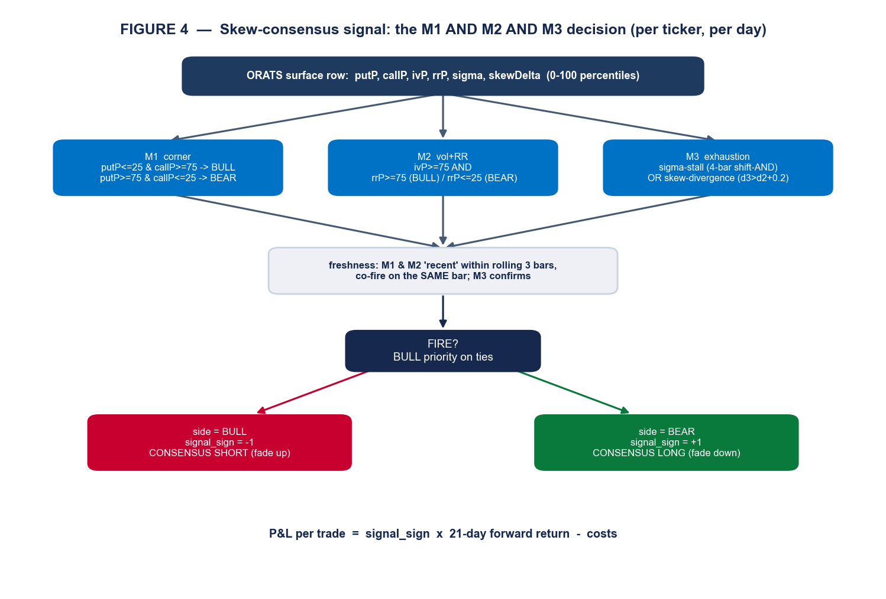
| Gate | BULL (→ short fade, sign −1) | BEAR (→ long fade, sign +1) |
|---|---|---|
| M1 corner | putP ≤ 25 & callP ≥ 75 | putP ≥ 75 & callP ≤ 25 |
| M2 vol + RR | ivP ≥ 75 & rrP ≥ 75 | ivP ≥ 75 & rrP ≤ 25 |
| M3 stall | sigma.shift(3..0) all ≥ 1.0 AND |s3−s0| < 0.3 | all ≤ −1.0 AND |s3−s0| < 0.3 |
| M3 divergence | d0,d1,d2 < 0 & d3 > d2 + 0.2 (skewDelta turns up) | d0,d1,d2 > 0 & d3 < d2 − 0.2 |
ConsensusOpts defaults: hi=75, lo=25, freshness=3, sigma_threshold=1.0, sigma_mode=True, skew_mode=True, require_both=False, allow_bull=True, allow_bear=True. M3 confirms when stall OR divergence holds (default; require_both would AND them). Freshness applies a trailing rolling-OR flag.rolling(3, min_periods=1).max() to the M1/M2 flags, and the consensus fires only where the M1 and M2 “recent” flags and the M3 confirmation are all true on the same bar; BULL wins ties. Float forms are load-bearing: d3 > d2 + 0.2 (not (d3−d2) > 0.2) and a 4-bar shift-AND (not rolling(4).sum()==4) — algebraically equal but not bit-equal (~332 ULP cases). Economically, P&L = signal_sign × 21-day forward return − costs: a fade that profits when the crowded extreme reverts.
quant_validator/backtest.py is the keystone adapter: the single bridge from a strategy’s fires frame to every downstream stage. It is generic — any strategy whose fires resolve to a side per (ticker, date) can be run.
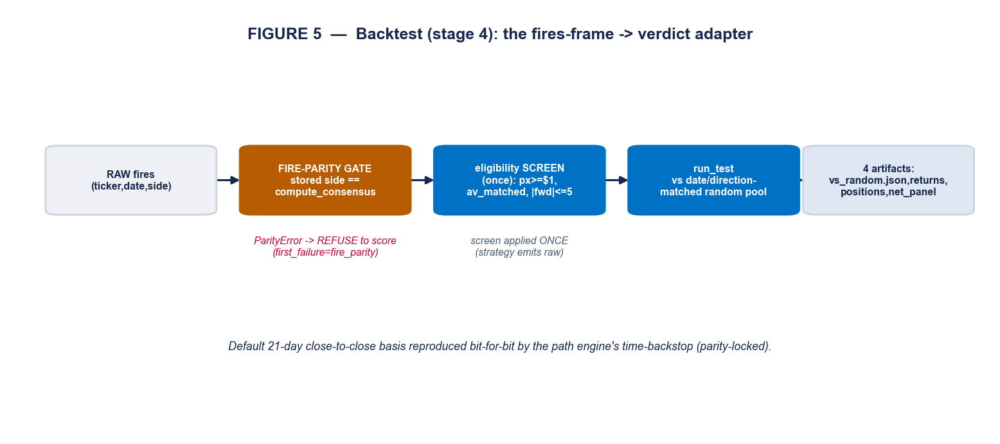
run_test; four canonical artifacts are emitted.raw_close ≥ $1, av_matched true, and |forward return| ≤ 5.0 (caps sub-$1 penny blow-ups). Strategies emit raw fires precisely so this screen is not double-applied.vs_random.json (the verdict), returns.csv (daily equal-weight book return), positions.csv (single-column net exposure → PCA N/A pass), net_return_panel.csv (per-trade panel, the sizing engine’s input). Daily Sharpe is annualised with ANN = 252; default cost_bps = 20.compute_consensus, the stored panel side must reproduce a fresh recompute on the parity tickers, or the stage writes status:"fail", first_failure:"fire_parity" and refuses to score (see §23).The verdict is not a Sharpe — it is a selection test. For each fire on date t, the engine draws random eligible tickers on the same date and applies the fire’s own sign, then bootstraps (×2000). This controls for market regime and holds the fade direction fixed, so it measures whether the signal picks better than chance — not whether the market drifted.
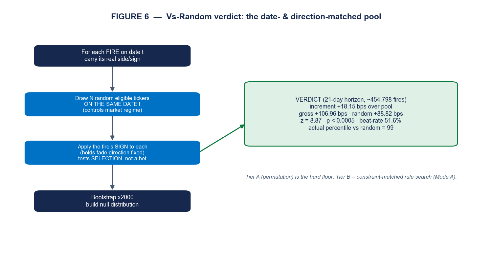
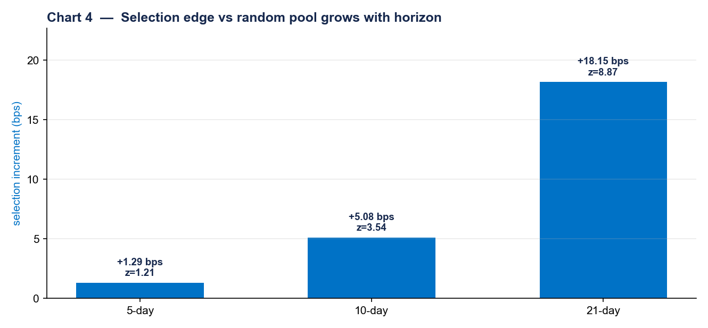
vs_random.json).| Horizon | n fires | Increment | Gross | Random | z | p | Beat-rate |
|---|---|---|---|---|---|---|---|
| 5-day | 456,661 | +1.29 bps | 14.28 | 12.99 | 1.21 | 0.114 | 50.99% |
| 10-day | 456,494 | +5.08 bps | 31.39 | 26.30 | 3.54 | <0.0005 | 51.30% |
| 21-day | 454,798 | +18.15 bps | 106.96 | 88.82 | 8.87 | <0.0005 | 51.61% |
Tier-A actual Sharpe 0.98, at the 99th percentile vs the random pool. The 5-day horizon is honestly weak (p 0.11) — the edge is a 10–21 day reversion, which is exactly why the hold is 21 days.
quant_validator/stats.py computes the performance metrics and — critically — the multiple-testing-aware Deflated Sharpe Ratio (Bailey & López de Prado).
| Metric | Definition |
|---|---|
| Sharpe / Sortino / Calmar | mean/std·√252 · downside-only denominator · annual_return/|maxDD| |
| Max drawdown + duration | min of (equity−peak)/peak on cumprod(1+r); longest below-peak run |
| Distribution | skewness, excess kurtosis (Fisher), win-rate |
SR* = σ̂_SR · [ (1−γ)·Φ⁻¹(1−1/N) + γ·Φ⁻¹(1−1/(N·e)) ] (γ = Euler–Mascheroni), where σ̂_SR² = (1/(T−1))·(1 − skew·SR + ((kurt−1)/4)·SR²). The reported dsr_probability_real = Φ((SR − SR*)·√(T−1)/denom) is the probability the true edge exceeds that data-mined maximum (higher is better); dsr_pvalue = 1 − that is what the gate reads. The number of trials N comes honestly from the memory store, so every experiment ever run inflates the bar. For the skew strategy at validation: p 0.006, prob-real 0.994 (n_trials = 3).Stage 6.5 turns the engine of §13 into a hard floor. Tier A (a timing permutation that randomises when the strategy is in the market at the same activity rate) is the non-negotiable floor; Tier B (a constraint-matched random-rule search) runs in Mode A only and is recorded "not_available" in Mode B. A fail halts the pipeline (overridable as vs_random); a borderline continues with a warning.
Tools: Read, Write, Bash. It assumes the backtest is misleading and looks for the cracks, writing critique_post.json with a per-criterion verdict of pass | warning | fatal. It runs as the 4th gate, before the statistical gates.
| # | Criterion | pass / warning / fatal boundary |
|---|---|---|
| 1 | Costs | spread+impact calibrated / bare fee_bps / no cost model |
| 2 | Look-ahead | .shift(1) clean / — / missing shift or center=True |
| 3 | Survivorship | point-in-time constituents / — / today’s index on history (single fixed ticker auto-pass) |
| 4 | Optimizer constraints | caps present / missing for X-sectional / — (single-asset N/A) |
| 5 | Market impact | √-impact or <1% ADV / missing >1% ADV / large size no model |
| 6 | Participation cap | max_pct_adv ≤ 10% / missing at size / ignores ADV on illiquid |
| 7 | Deflated Sharpe | dsr_pvalue < 0.95 / 0.85–0.95 / ≥ 0.95 |
| 8 | Regime-conditional | Sharpe + in all regimes / one regime only / negative in any (folds in the vs-random Tier-A verdict) |
| 9 | OOS holdout | true untouched holdout / walk-forward alone / no OOS |
Output: any_fatal, warnings_count, and a recommendation∈{reject, accept_with_warnings, accept}. Bias: when in doubt → warning. Any fatal halts (overridable as critic_validator).
quant_validator/gates.py applies four deterministic gates with hard default thresholds.
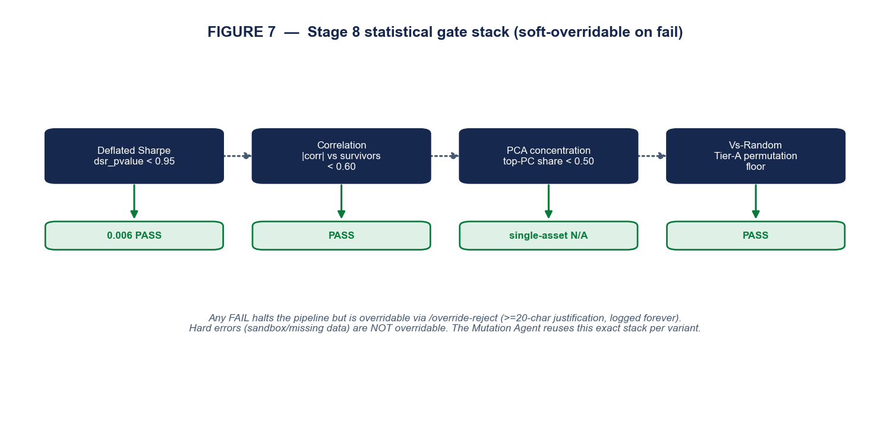
| Gate | Pass condition | Edge behaviour | Skew result |
|---|---|---|---|
| Deflated Sharpe | dsr_pvalue < 0.95 | N/A if dsr.json missing | 0.006 — PASS |
| Correlation | max|corr| with survivors < 0.60 | pass if no survivors | PASS |
| PCA concentration | top-PC variance share < 0.50 | single-asset → N/A pass | N/A pass |
| Vs-Random | Tier-A permutation floor (maps stage 6.5) | N/A if file missing | PASS |
The roll-up is fail if any gate fails, else warning, else not_available, else pass. A fail is a soft-overridable halt; a missing upstream artifact is explicitly not a fail. (Both stats.py and gates.py note that the 0.95 DSR ceiling is deliberately lenient for research and should be tightened toward 0.05–0.10 for production.)
Tools: Read, Write, Bash. The Risk agent runs quant_validator/risk_stats.py to compute deterministic statistics, scores risk 0–10, and recommends a deployment size as a fraction of the approved size; the quant_validator/sizing.py engine then turns approved trades into a sized book.
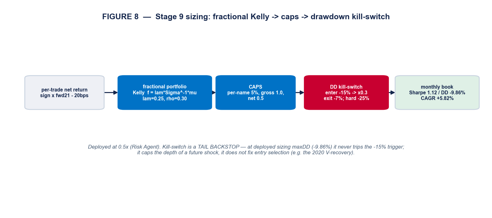
| Risk-score lever | Trigger |
|---|---|
| Cap size to 0.4 / 0.6 | net short vega without / with a documented tail hedge |
| Cap size to 0.5 | excess kurtosis > 6, or > 50% of positions inside an event window (unless event-targeted) |
| Warnings (no cap) | kurtosis > 3, concentration share > 0.4, max-ticker > 25%, worst-1d −10…−15%, DD duration > 90 days |
| Hard reject (score ≥ 8) | regime asymmetry + net short vega, concentration > 0.6, worst-1d < −15% (non-deleveraging), max-ticker > 35% |
| Borderline (score = 7) | pause and ask the user (cap 0.3 / override to 0.5 / reject) |
The sizing engine (deployed constants): per-trade net_return = signal_sign · fwd_21 − cost_bps/10⁴ (cost 20 bps); fractional portfolio Kelly f = λ·Σ⁻¹·μ with λ = 0.25 on a constant-correlation covariance (ρ = 0.30); caps applied in order — per-name 5%, gross 1.0, net 0.5; and a hysteretic drawdown kill-switch that de-risks to ×0.3 when realised drawdown hits −15% and restores at −7% (hard flatten at −25%). Trades are bucketed into monthly cohorts (21-day hold ≈ one month). Result: Sharpe 1.12, CAGR +5.82%, max drawdown −9.86%, every year positive; the Risk agent scored 4/10 and recommended 0.5×.
Memory (quant_validator/memory.py) is an append-only SQLite store. The trials table records every accept/reject with the honest DSR trial count at the time (n_trials_at_time), the metrics, and an override_log_json; a trial_greeks side table tracks net delta/gamma/vega for portfolio-level Greek aggregation. deployment_status ∈ {archived(default), paper, live, retired}; n_trials() = COUNT(*) feeds the Deflated Sharpe, and retired predecessors are excluded from the correlation gate so a successor isn’t blocked by the version it replaces. Overrides are never lost (a placeholder row is inserted if needed).
Reporter (the report-rendering Skill, stage 10) maintains one living, self-contained HTML report per strategy: a canonical report.json (each stage writes only its own slice — append-and-update, never wipe) and a report.html that is a pure function of it, with charts baked as inline SVG (no CDN/JS, prints to PDF). Sections render in order: stages 1–10, a robustness block (cost-survival, temporal, regime), a phases block (Phase-4 paper / Phase-5 live with the owned-positions table, the ranked exit options, and the next-open trade queue), and a Mutations section. On a full re-run the version bumps and the prior HTML is snapshotted.
Stages 1–10 answer “is it real and how big?” The optimisation layer answers “can we make it better without fooling ourselves?” Its primary job is to search hard while refusing to overfit — the guardrails are the product.
quant_validator/mutation_agent.py is a closed loop: propose a guarded variant → re-fire and path-backtest it across walk-forward folds → risk-score it against the baseline and the drawdown bound → feed back → propose again. It is thesis-locked (the M1∧M2∧M3 edge is never mutated, only knobs around it) and bounded by two governors.
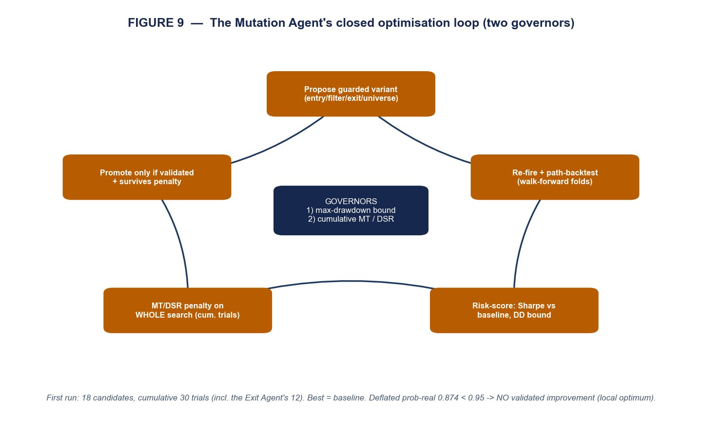
| Candidate set | Members (code-backed) |
|---|---|
| Exit (11, cheap — reuse fires + OHLC) | hard-stop only at 8/6/10/5%, Bollinger band only, hard-stop+Bollinger mean, trailing+Bollinger, base+vol-spike, base+squeeze, base+tail, hard-stop+profit-target |
| Universe (2, cheap — fire filter) | liquid raw_close ≥ 5, liquid ≥ 10 |
| Entry (4, expensive — re-fire consensus) | corner 70/30, corner 80/20, freshness 5, sigma 1.5 |
Promotion is hard. A variant must beat the baseline Sharpe on a majority of folds, keep pooled maxDD ≥ −0.25, retain ≥ 50% of the baseline mean edge, and beat the pooled Sharpe — and then survive the multiple-testing penalty. The Deflated-Sharpe trial count is cumulative: n_trials = 12 (the Exit Agent’s prior candidates) + 18 (this run) = 30, so every variable tried inflates the bar for the best one.
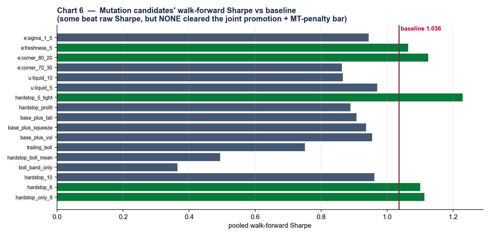
exit_hardstop_5_tight 1.229, entry_corner_80_20 1.124 — but none cleared the joint promotion + multiple-testing bar.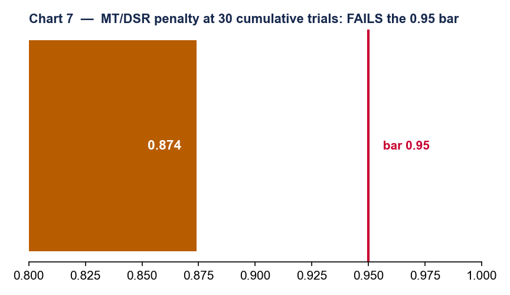
quant_validator/exit_agent.py replaces “always ride to day 21” with finding the exit that captures the most profit before the fade reverts. It has three parts: a sign-aware rule library, an out-of-sample walk-forward selection, and a run-time ranker.
| Rule builder | Default params | Purpose |
|---|---|---|
r_time | 21 bdays | non-negotiable time backstop |
r_hard_stop | 8% | tail / loss control |
r_trailing_stop | 10% | give-back control |
r_profit_target | 15% | lock a win |
r_bollinger_reversion | n=20, k=2.0, target mean|band | the fade’s take-profit (entry-context-aware) |
r_vol_spike | yz5 or atm_iv ≥ 0.80 | regime-turn exit |
r_squeeze | skew ≤ −2.0 | short-side squeeze tail control (the 2021-01 answer) |
OOS selection (20,000-fire sample, 5 time folds, 20 bps): a rule survives only if it beats the baseline Sharpe on a majority of folds or cuts max drawdown on a majority, and keeps ≥ 50% of the baseline mean edge. The baseline (21-day backstop) scored Sharpe 0.879, maxDD −23.95%, −608.5 bps on 2021-01.
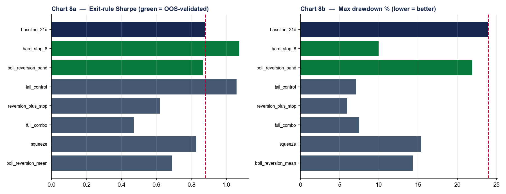
hard_stop_8 lifts Sharpe to 1.08 and cuts drawdown to −10%; boll_reversion_band keeps ~97 bps of edge while cutting drawdown on all five folds.| Rule | Survives? | Sharpe | Max DD | Mean bps | 2021-01 vs base |
|---|---|---|---|---|---|
| baseline 21d | — | 0.879 | −23.95% | 100.7 | — |
| hard_stop_8 | YES | 1.075 | −9.97% | 58.9 | +516.2 bps |
| boll_reversion_band | YES | 0.867 | −21.9% | 96.7 | +63.1 bps |
| tail_control | no (edge-keep) | 1.059 | −7.06% | 42.8 | +675.3 bps |
| vol_spike_atm_iv | no | −0.528 | −14.48% | −13.7 | +502.8 bps |
Deployed policy: hard_stop_8 + boll_reversion_band + 21-day backstop (sign-aware). At run time the ranker surfaces 2–3 exits per open position by urgency (act_now > target > backstop > watch). The protective rules are enforced in the live loop; the profit-target is advisory by default.
quant_validator/backtest_path.py walks daily adjusted OHLC bar-by-bar so the exit rules can see intrabar touches the close-to-close panel cannot. Rules are evaluated in priority order; the first rule to trigger on the earliest bar wins.
| Rule | Long / short trigger (sign-mirrored) |
|---|---|
| hard_stop / trailing_stop | low ≤ entry·(1−p) / high ≥ entry·(1+p); trailing tracks run-max/run-min |
| profit_target | high ≥ entry·(1+p) / low ≤ entry·(1−p) |
| bollinger_mean / band | price reverts to the SMA-n mid / to entry ± k·σ band |
| bollinger_reversion | entry-context-aware: arms only if entered on the extended side, then targets mean or band |
| vol_spike / squeeze | Yang-Zhang 5-day or ATM-IV ≥ threshold / (short only) skew ≤ −threshold |
| time_backstop | t ≥ entry + 21 bdays — the non-negotiable floor |
The default entry_mode = "signal_close" fills at the signal-date close, preserving the close-to-close basis the verdict was validated on (the alternative "next_open" mirrors live OPG fills). Crucially, when the only rule is the time backstop, the engine reproduces av_fwd_21_total bit-for-bit — a fast path the parity gate verifies to < 1e-9.
A generated strategy must not reach scoring if it disagrees with its declared reference. quant_validator/parity_gate.py enforces this.
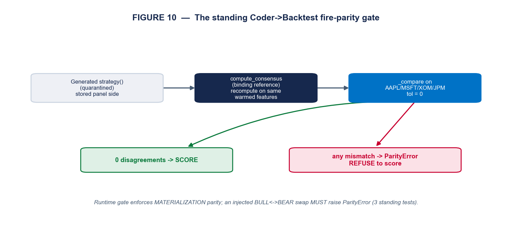
run_test actually scores == a fresh compute_consensus recompute); generated-vs-reference is held as a standing test.AAPL, MSFT, XOM, JPM over the six feature columns, with tolerance 0 — any single disagreement raises ParityError and the backtest writes first_failure:"fire_parity" and refuses to score.ParityError is raised. A novel thesis that declares no reference skips the gate cleanly.A backtest result means little without knowing how realistic the simulation was. This system climbs a deliberate ladder of fidelity, and — crucially — proves each rung reproduces the one below it, so added realism never quietly changes the verdict.
| Rung | What it adds | Realism caveat it removes | Where |
|---|---|---|---|
| 1 — Selection verdict | Signed forward returns vs a same-day, same-direction random pool | “It’s just market drift / beta.” | run_test |
| 2 — Cost-aware | 20 bps round-trip charged on every trade | “Frictionless fills flatter the edge.” | cost_bps in adapter + sizing |
| 3 — Eligibility-screened | $1 floor, |fwd| ≤ 5.0, AV-matched, survivorship-free universe | “Penny flukes / dead tickers carry it.” | run_test screen + clean panel |
| 4 — Path-dependent | Bar-by-bar adjusted OHLC so intrabar stop/target/Bollinger touches are seen | “Close-to-close hides the real exit.” | backtest_path._simulate |
| 5 — Parity-locked | Time-backstop path reproduces close-to-close to < 1e-9; live _simulate == backtest, rule-for-rule | “The live engine differs from the test.” | parity_gate, exit_parity_check |
| 6 — Live OPG | Market-on-open fills, shortability gate, idempotent orders, staleness guard | “It can’t actually be traded.” | fills.py (Alpaca) |
The default entry_mode = "signal_close" keeps rungs 1–5 on the exact close-to-close basis the verdict was validated on; switching to "next_open" moves to the live OPG basis on purpose. Because each rung is parity-checked against the previous one, the +18.15 bps / z 8.87 selection verdict and the 1.12-Sharpe sized book are the same result viewed at increasing realism — not three different backtests.
The signal is only as good as the panel under it. The data layer is survivorship-free and point-in-time by construction.
| Component | What it is |
|---|---|
| ORATS surface | Full-universe by-date backfill (~5,805 tickers/day); the six signal features recomputed bit-identical to the reference tool (252-day rolling percentiles; sigma = 5-day move / 20-day vol) |
| Survivorship | AV LISTING_STATUS builds an active + delisted master; symbol_map resolves ORATS→AV (exact then punctuation-normalised; unmatched never silently dropped) |
| Path bars | AV TIME_SERIES_DAILY_ADJUSTED (premium) → split/dividend-adjusted OHLC, the path engine’s input |
| Clean panel | signal_panel_clean.parquet — merged signal × adjusted OHLC, ~8,519 tickers, pre-computed forward returns; 454,798 fires, 2013–2026 |
| Warm-up | WARMUP_BDAYS = 756 (3yr ORATS), WARMUP_START = 2013-11-26 — every percentile/sigma window is fully warmed |
| Live feed | run_live backfills the gap, rebuilds the trailing-756 panel, fires the latest session (~150–250/day), and flips is_live_orats — it verifies, it does not trade |
quant_validator/fills.py enforces both entry and exit on Alpaca through a pluggable FillSource seam (modeled | alpaca_paper | alpaca_live). Phase 5 (live) is the same code with paper=False, gated on an accrued track record.
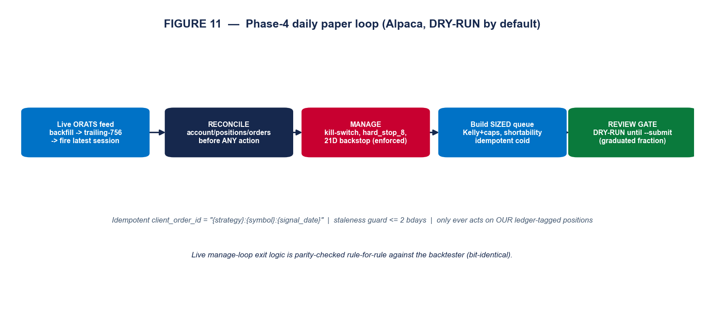
--submit.| Safety default | Rule (non-negotiable) |
|---|---|
| Idempotency | client_order_id = "{strategy}:{symbol}:{signal_date}" — Alpaca rejects duplicates, so a re-run is a no-op |
| Reconcile-first | account / positions / open-orders are reconciled before every action |
| Only act on ours | the loop touches only ledger-tagged positions — never an unknown position |
| Staleness guard | refuse a signal older than 2 business days (unless --allow-stale) |
| Caps | per-name 5%, gross 1.0, net 0.5 — a breach hard-aborts the submit |
| Shortability | non-shortable shorts are skipped + logged, not hard-rejected |
| Order type | market-on-open (OPG TIF), mirroring the backtest’s next-open basis |
| Exit enforcement | ENFORCE_EXITS = risk_only (default): kill-switch + hard_stop_8 + 21D backstop enforced; profit-target advisory. enforced adds the Bollinger reversion band. |
The manage loop reconciles, runs the kill-switch (hard-flatten at −25%), enforces the protective exits via the same _simulate used in the backtest (parity by construction — exit_parity_check must be 100% bit-identical), and runs the scheduled 21-day closes. Sessions are US-holiday-aware. Current live book (DRY-RUN): a queue of 194 OPG orders (110 long / 84 short; 21 intended shorts dropped non-shortable) for the 2026-05-26 open, gross 0.4337 / net 0.0898 at 0.5×, held behind the first-day review gate.
This is the payoff: how a strategy an analyst incubates as a sentence travels the whole system to a paper fill.
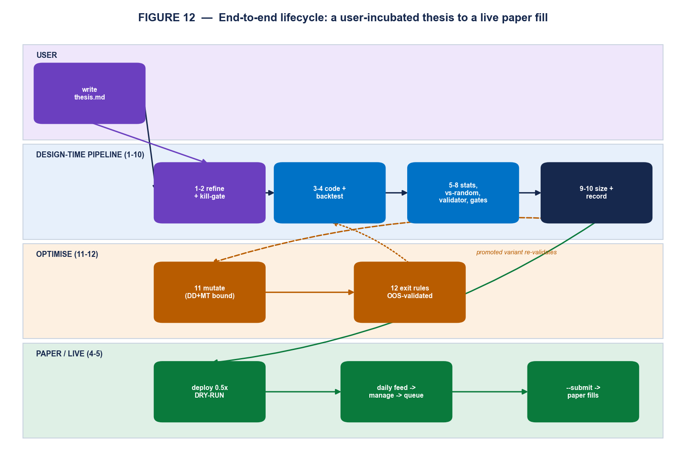
thesis.md — e.g. “when the options surface shows a crowded, exhausted skew extreme, fade the underlying over ~a month.”market_type = equities (it trades the stock), mode = single, holding 21 bars, with a mandatory works_in_regime / breaks_in_regime pair and three named failure modes.warning_flags; a fatal flaw would kill it here.strategy(); the fire-parity gate confirms it reproduces compute_consensus on AAPL/MSFT/XOM/JPM with 0 disagreements, then the Backtest applies the eligibility screen once and scores it.hard_stop_8 + boll_reversion_band out-of-sample and they are banked for risk control.--submit begins real paper fills; Phase 5 (live broker) is the same code, gated on the accrued paper track record.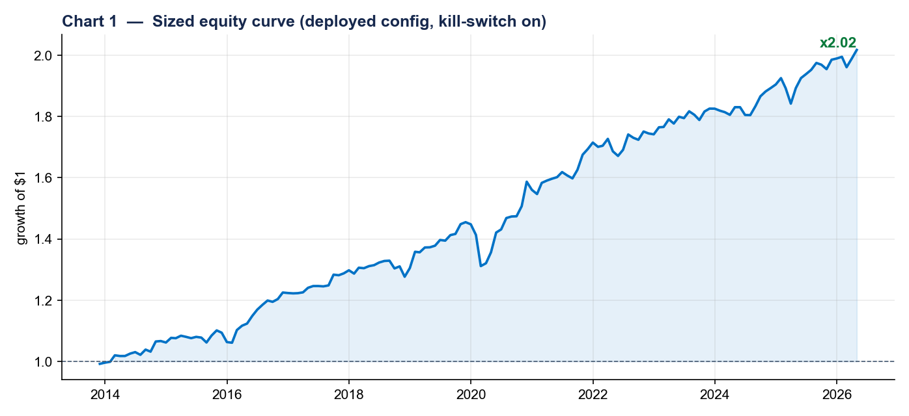
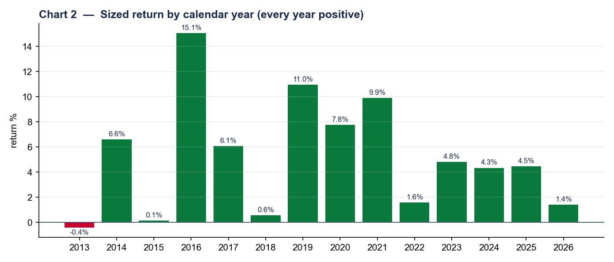
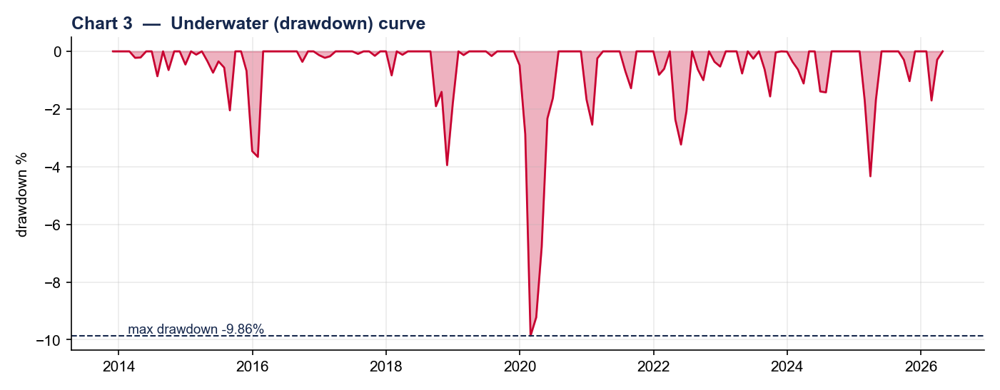
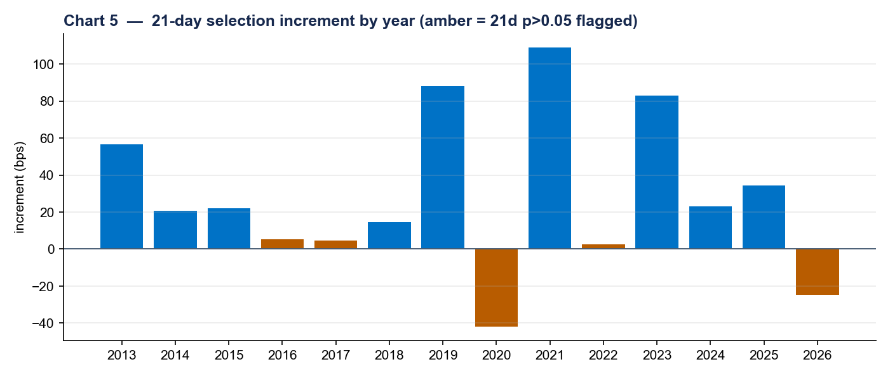
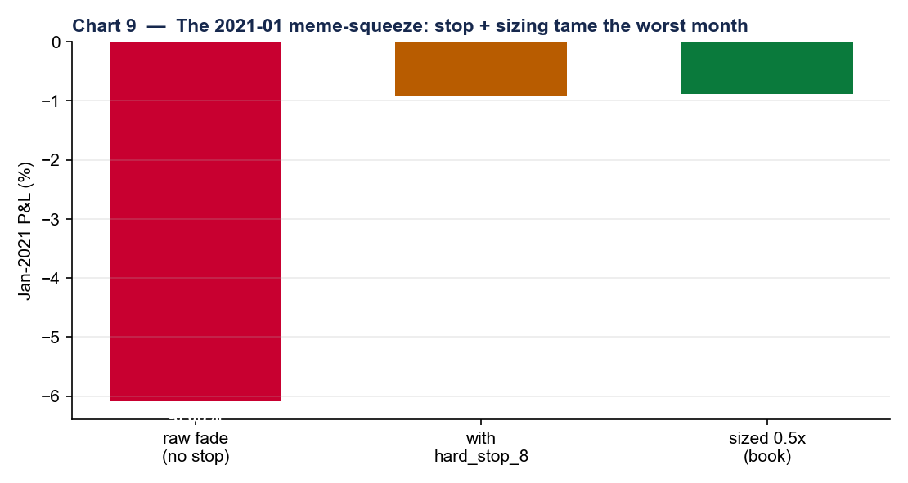
hard_stop_8 turns the month around (+516 bps vs no stop) and 0.5× sizing brings the booked month to −0.88%.An honest system documents where it is weak. These are stated plainly so they are managed, not discovered.
| Limitation / failure mode | Consequence | Mitigation / status |
|---|---|---|
| V-recovery regime risk | A sharp, broad V-shaped rebound (e.g. 2020) runs over the short side of the fade — the worst structural exposure. | Earnings/short-trend filters + hard_stop_8 + the kill-switch bound the damage; not eliminated. |
| Economically modest edge | ~1.1 Sharpe — real but not spectacular; sensitive to cost assumptions. | Costed at 20 bps; cost-survival breakeven tracked; deployed at 0.5×. |
| Short-side capacity | ~10% of intended shorts are non-shortable on a given day (dropped, not forced). | Shortability gate skips + logs; net exposure cap absorbs the imbalance. |
| Single live data vendor | The signal depends on the ORATS surface; a feed outage stalls new fires. | Staleness guard refuses signals > 2 bdays old; manage loop still runs exits. |
| Lenient research DSR ceiling | The 0.95 DSR p-value gate is deliberately permissive for exploration. | Code comments flag tightening toward 0.05–0.10 for production; the optimiser already uses 0.95 as a floor for promotion. |
| No paper track record yet | Live OOS performance is unproven; backtest ≠ live. | Phase-5 (live) is gated on an accrued paper record (≥ 60 sessions, live Sharpe ≥ 0.5× backtest). |
| Sector concentration unmodelled | GICS sector caps are a parameterised hook, not yet active (no sector map in panel). | Per-name 5% + net 0.5 caps limit single-name and directional risk meanwhile. |
Roadmap. (1) Accrue the paper track record on the live ORATS feed — the immediate next step. (2) Then the live transition (Phase 5): identical code, paper=False + live keys. (3) Longer-horizon: tighten the production DSR ceiling, add the sector map to activate sector caps, and graduate the Phase-2 features_custom.* modules onto the sandbox allowlist behind an import-safety audit.
The pipeline is generic: any prose trading idea can travel it, not just the skew fade. This is how an analyst incubates a new thesis and what to expect at each gate.
A short thesis.md in plain English. The Hypothesis-Refiner does the formalising — you do not write JSON or code. A good thesis states: the signal (what you observe), the action (what you trade and which direction), the horizon (how long you hold), and — most usefully — when you expect it to work and when to break.
| Strong thesis (passes refining) | Weak thesis (gets sent back) |
|---|---|
| “When 30-delta put skew spikes into an earnings drift, buy the underlying for ~2 weeks; works in calm tapes, breaks in a vol shock.” | “Oversold stocks bounce.” (no parameters, no regime, no horizon) |
market_type. Using options data to trade the stock is equities — this changes which Pre-Critic template screens you.dsr_pvalue against the trial count — a great Sharpe at 200 trials may be noise.size_recommendation (default 0.5×) and the concerns list tell you how much the officer trusts the tails.decision.json (✓ accepted / ✗ rejected / 🔶 accepted-with-override) plus a living HTML report you can open in a browser or print to PDF — every stage, every number, every override, on one page. If accepted, the strategy can be deployed to DRY-RUN paper trading with one command and graduated to real paper fills with an explicit --submit.| Term | Meaning |
|---|---|
| Fade | Trade against a crowded extreme, expecting reversion (BULL corner → short; BEAR corner → long). |
| Fires frame | The canonical strategy output: one row per (ticker, date) signal with side, sign, forward returns, and stage flags. |
| Selection increment | How much the signal beats a same-day, same-direction random pick — the engine measures selection skill, not market drift. |
| Deflated Sharpe (DSR) | A Sharpe haircut for the number of trials tried, so data-mining a good-looking number doesn’t pass. |
| Materialization parity | The stored panel side that the verdict actually scores must equal a fresh reference recompute — bit-for-bit. |
| Kill-switch | A hysteretic drawdown governor that de-risks the book to 0.3× at −15% and restores at −7%. |
| Idempotent client_order_id | A deterministic order key so re-running the daily loop never double-submits. |
| OPG | Market-on-open time-in-force, matching the backtest’s next-open fill basis. |
| Domain | Constant | Value |
|---|---|---|
| Signal | hi / lo percentile, freshness, sigma_threshold | 75 / 25, 3 bars, 1.0 |
| Signal | divergence threshold (d3 vs d2) | ± 0.20 |
| Sign | BULL / BEAR | −1 (short) / +1 (long) |
| Screen | price floor, max |forward return| | $1, 5.0 |
| Backtest | horizons, annualisation, cost | 5 / 10 / 21, 252, 20 bps |
| Vs-random | bootstrap draws | 2000 |
| Gates | DSR p-value max, correlation max, PCA share max | 0.95, 0.60, 0.50 |
| Sizing | Kelly λ, correlation ρ | 0.25, 0.30 |
| Sizing caps | per-name, gross, net | 5%, 1.0, 0.5 |
| Kill-switch | enter / de-risk / exit / hard | −15% / ×0.3 / −7% / −25% |
| Risk | hard-reject score, default deploy | ≥ 8, 0.5× |
| Exits | deployed policy | hard_stop 8% + Bollinger reversion band + 21D backstop |
| Optimiser | prior trials, prob-real bar, DD bound, edge-keep | 12, 0.95, −0.25, 0.50 |
| Paper | staleness, order type, default mode | ≤ 2 bdays, OPG, DRY-RUN |
| Data | warm-up, panel start anchor | 756 bdays, 2013-11-26 |
| Parity | tickers, tolerance | AAPL/MSFT/XOM/JPM, 0 |
Every run leaves a complete, append-only paper trail under theses/<id>/, so any verdict can be reconstructed and any override audited.
| Stage | Artifact |
|---|---|
| 0–1 | thesis.md → refined.json + step_summaries/01_refiner.md |
| 2 | critique_pre.json |
| 3–4 | code/signal.py, results/{vs_random.json, returns.csv, positions.csv, net_return_panel.csv} |
| 5–6 | results/{metrics.json, dsr.json, walk_forward.json} |
| 7–9 | critique_post.json, gates_outcome.json, risk.json |
| 10–11 | memory.db row, reports/<strategy>/report.{json,html}, decision.json |
| cross-cutting | audit_log.jsonl, user_interactions.jsonl, optimisation reports/{mutation_agent,exit_agent_selection}.json |
— End of report —
Confidential working document · Skew-Consensus Validation System · Extended Companion to Project Record v2.2 · May 2026.
Every numeric value above is sourced from the codebase on branch claude/funny-elbakyan-1e8456.